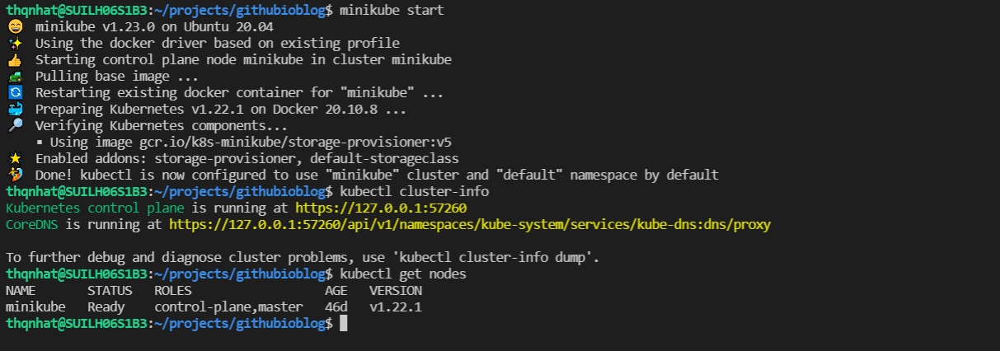
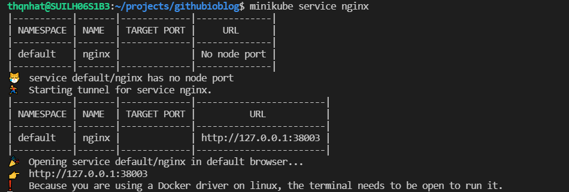
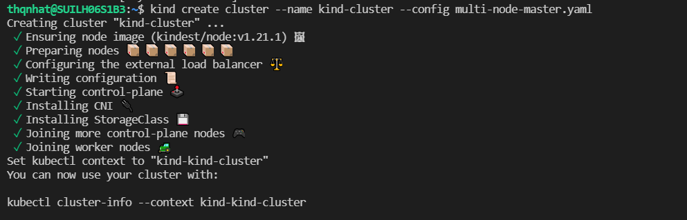
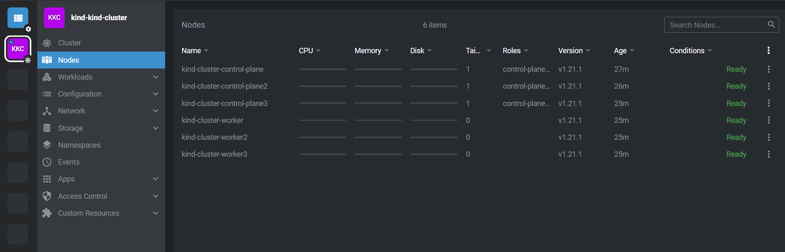
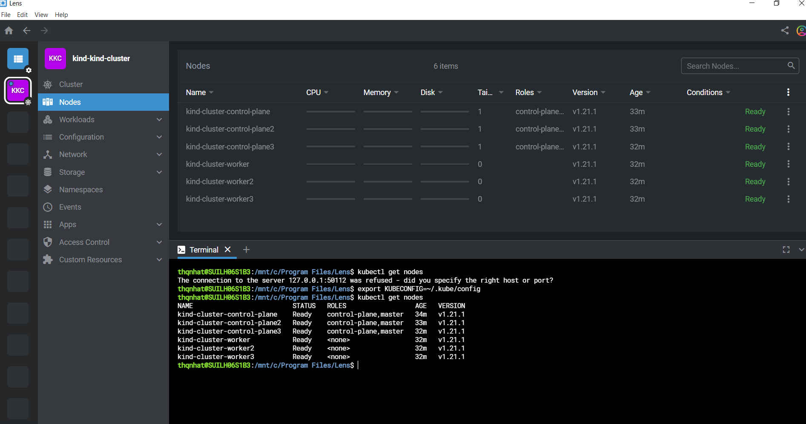
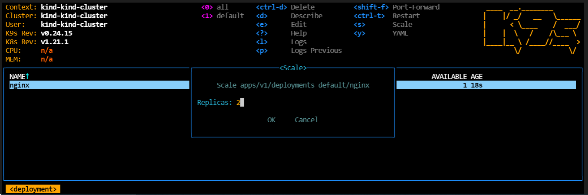
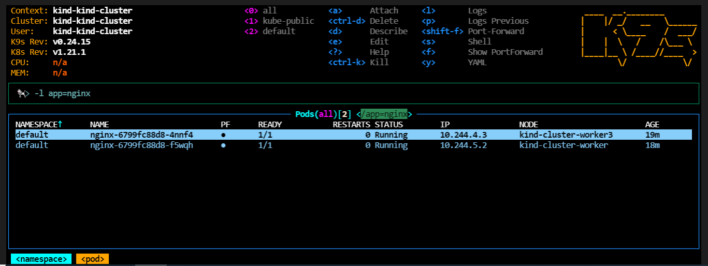
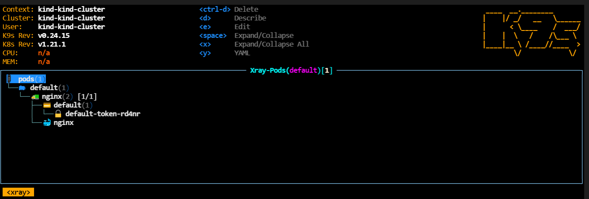
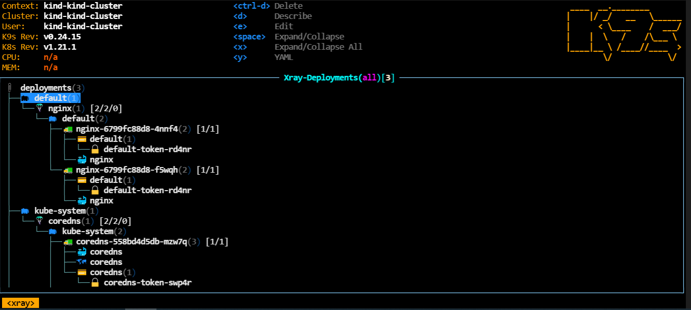
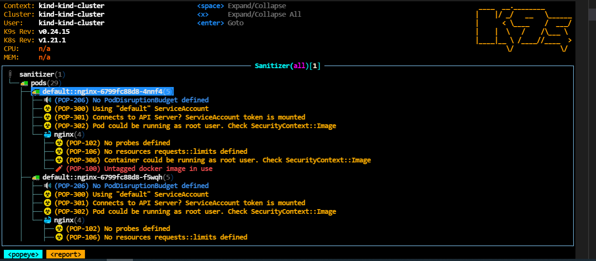

In this article, we will walk through how provisioning a local Kubernetes cluster (single node or multiple nodes).

The next part will guide you to provision a Kubernetes cluster on cloud (Azure or GCP).
1. Minikube
Minikube is local Kubernetes, focusing on making it easy to learn and develop for Kubernetes.
- Download minikube for Linux:
curl -LO https://storage.googleapis.com/minikube/releases/latest/minikube-linux-amd64
sudo install minikube-linux-amd64 /usr/local/bin/minikube
-
Set minikube driver: minikube config set driver docker. You can use other drivers (VirtualBox, Hyper-V,…) if you want.
-
Start minikube: minikube start
-
Your cluster is up and running 
-
Let’s try to create a pod and a service
kubectl create deployment nginx --image=nginx --port=80 --replicas=1
kubectl expose deployment nginx --port=80
kubectl get svc
- Get service url by running: minikube service nginx. Your pod is accessible at this url: http://127.0.0.1:38003.

Minikube is easy to setup but it’s not supported yet for creating a multi-nodes cluster (multi master nodes and worker nodes). For this use case, you can consider Kind.
2. Kubernetes in Docker (kind)
kind is a tool for running local Kubernetes clusters using Docker container “nodes”.
Prerequisites:
- Docker must be installed. If it is not the case, you can download this convenience script to install Docker on your machine: https://docs.docker.com/engine/install/ubuntu/
- kubectl: https://kubernetes.io/docs/tasks/tools/install-kubectl-linux/
Installation:
- Download kind for Linux
export kind_version=v0.11.1
curl -Lo ./kind https://kind.sigs.k8s.io/dl/$kind_version/kind-linux-amd64
chmod +x ./kind
sudo mv ./kind /usr/local/bin
-
Verify if kind is installed by running this command: kind version
-
Provision a cluster with 3 master nodes and 3 worker nodes:
- create a yaml file describing your cluster named multi-node-master.yaml with the below content:
kind: Cluster apiVersion: kind.x-k8s.io/v1alpha4 nodes: - role: control-plane - role: control-plane - role: control-plane - role: worker - role: worker - role: worker- run this command to create your cluster:
kind create cluster --name kind-cluster --config multi-node-master.yaml
-
Once this is done, you have kubeconfig ready for use located at ~/.kube/config
-
Get the cluster’s information:
kubectl cluster-info
Kubernetes control plane is running at https://127.0.0.1:34271
CoreDNS is running at https://127.0.0.1:34271/api/v1/namespaces/kube-system/services/kube-dns:dns/proxy
-
Switch kubectl context to the new created context: kubectl cluster-info –context kind-kind-cluster
-
Now, verify your nodes:
kubectl get nodes
NAME STATUS ROLES AGE VERSION
kind-cluster-control-plane Ready control-plane,master 3m37s v1.21.1
kind-cluster-control-plane2 Ready control-plane,master 3m16s v1.21.1
kind-cluster-control-plane3 Ready control-plane,master 2m9s v1.21.1
kind-cluster-worker Ready <none> 113s v1.21.1
kind-cluster-worker2 Ready <none> 114s v1.21.1
kind-cluster-worker3 Ready <none> 113s v1.21.1
- Everything is good. Let’s try to create a pod.
kubectl run nginx --image=nginx
kubectl get pod -o wide
NAME READY STATUS RESTARTS AGE IP NODE NOMINATED NODE READINESS GATES
nginx 1/1 Running 0 49s 10.244.3.2 kind-cluster-worker2 <none> <none>
- Well done! Your pod is scheduled on the worker node 2.
3. Lens
If you need a tool to visualize/manage your k8s cluster (local and remote) using UI, Lens is may be a good option. It is built on open source and free.
Tips for installing Lens for Windows and connect it to WSL2 (Windows Sub System for Linux):
-
Download Lens for Windows and install it
-
Go to File–>Preferences–>Application: set terminal shell path to wsl.exe
-
Go to File–> Add Cluster then copie and paste the kubeconfig located at ~/.kube/config
-
Lens will show you the new clusters found
-
Click on the connect button on the cluster of your choice
-
Now, Lens could see your cluster on WSL2: 
-
From this screen, open a new terminal session (+ button at the bottom) and then run this command:
export KUBECONFIG=~/.kube/config
- Now, you can use kubectl as usual directly from Lens integrated command line: kubectl get nodes 
4. k9s
k9s is a terminal-based UI to manage Kubernetes clusters that aims to simplify navigating, observing, and managing your applications in K8s. K9s continuously monitors Kubernetes clusters for changes and provides shortcut commands to interact with the observed resources.
Installation:
- Download k9s for Linux:
k9s_version=v0.24.15
sudo wget -qO- https://github.com/derailed/k9s/releases/download/$k9s_version/k9s_Linux_x86_64.tar.gz | tar zxvf - -C /tmp/
sudo mv /tmp/k9s /usr/local/bin
-
Command mode is “:”
-
Start k9s by running: k9s
-
View all context: press “:” then ctx (:ctx)
-
View all namespaces: press “:” then ns (:ns)
-
View pods: press “:” then pod (:pod)
- View yaml file: press “y”
- View logs: press “l” or “p” (log previous)
- Edit yaml file: press “e”
- Open a shell session inside of pod: press “s”
-
View deployments: press “:” then deploy (:deploy)
- Describe deployment: press “d”
- Edit deployment: press “e”
- View logs: press “l” or “p” (log previous)
- Restart deployment: press ctrl-t
- Delete deployment: press ctrl-d
- Scale deployment: press “s” on selected deployment 
-
Search mode: press “/”
- view resources of default namespace: /default
- filter pod with specific label: / -l app=nginx 
-
Xray pod: press xray then pod (xray pod)

- Xray deployment: press xray then deploy (xray deploy)

-
Show general information about cluster: press : and then pulse (:pulse)
-
Checks all resources for conformity: press : then popeye (:popeye)

-
Help: press “?”
-
Go back: press “esc”
-
Close k9s session: press : then quit (:quit)
References
- Minikube: https://minikube.sigs.k8s.io/docs/start/
- Kind: https://kind.sigs.k8s.io/docs/user/quick-start/
- Lens: https://k8slens.dev/
- k9s: https://k9scli.io/